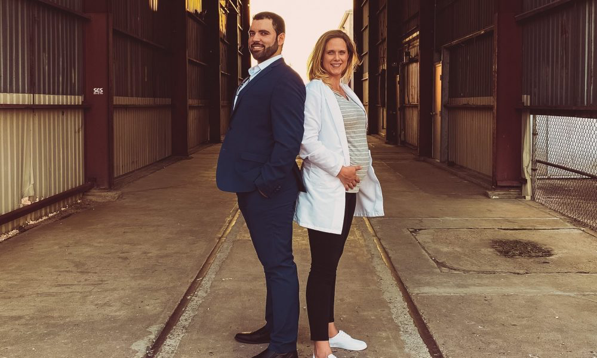
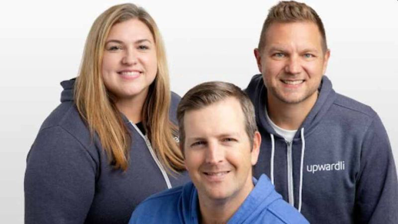

Disciplined Evaluation
Every opportunity is assessed through a consistent lens that prioritizes founder-market alignment, early traction, execution velocity, and asymmetric upside.
Early-stage venture capital
We identify and underwrite high-asymmetry opportunities before they become consensus.
Radix Innovation Capital invests in pre-seed and seed-stage startups across AI, fintech, health tech, blockchain, prop tech, future of work, and consumer. We move quickly when we see early signal, disciplined execution, and the potential for venture-scale outcomes.
About Radix
Radix Innovation Capital is an early-stage venture firm investing at the pre-seed and seed stages, typically deploying initial checks into a concentrated portfolio of high-conviction companies.
Our edge is built on a structured, repeatable approach that helps us surface early signals, reduce noise, and compound decision-making over time.
We are not driven by trends or volume. We are driven by clarity, consistency, and long-term returns.
Process
Our process is supported by structured evaluation and a curated ecosystem of operators, investors, capital allocators, and high-potential founders.
Every opportunity is assessed through a consistent lens that prioritizes founder-market alignment, early traction, execution velocity, and asymmetric upside.
Our network spans operators, investors, and cultural leaders who provide early insight into emerging companies and markets.
We intentionally build high-signal environments where relationships compound and companies receive support beyond the first check.
How We Invest
Regulatory, technological, or behavioral change can create outsized opportunities for new entrants.
Fragmented markets often produce early winners when distribution and execution outperform incumbents.
Founders with direct access to communities, audiences, or niche markets can accelerate beyond traditional acquisition models.
Companies that begin with a focused wedge and expand into adjacent markets are more likely to achieve venture-scale outcomes.
Portfolio
Representative companies and founders across our investment focus areas.
Backpack Healthcare
Healthtech WebsiteNestment
PropTech / Fintech WebsiteJuneBrain
AI / Healthtech Website
Milkify
Consumer WebsiteAskHumans
AI / Consumer Insights Website123BabyBox
Consumer WebsiteInfluxious
Consumer Website
Upward Financial
Fintech WebsitePortfolioPilot
AI / Fintech WebsiteSmart Bricks
AI / PropTech WebsiteAccelidea
Healthcare / Pre-seed WebsiteNeurometric AI
AI Infrastructure / Pre-seed WebsiteOur portfolio reflects early conviction in companies with strong signal, differentiated distribution, and the potential for venture-scale outcomes.
Team
Early-stage investor and operator focused on underrecognized founders, venture-scale markets, and first-signal opportunities.
LinkedInFinance and diligence lens across capital formation, company underwriting, and disciplined portfolio construction.
LinkedInRadix works with a curated ecosystem that expands access, supports portfolio companies, and sharpens conviction.
For Allocators
Radix is building a concentrated early-stage venture platform around repeatable evaluation, differentiated access, and disciplined portfolio construction.
Request Fund MaterialsFor founders building what others do not yet see
We review a small number of opportunities on a rolling basis and move quickly when there is strong early signal.
Share your company